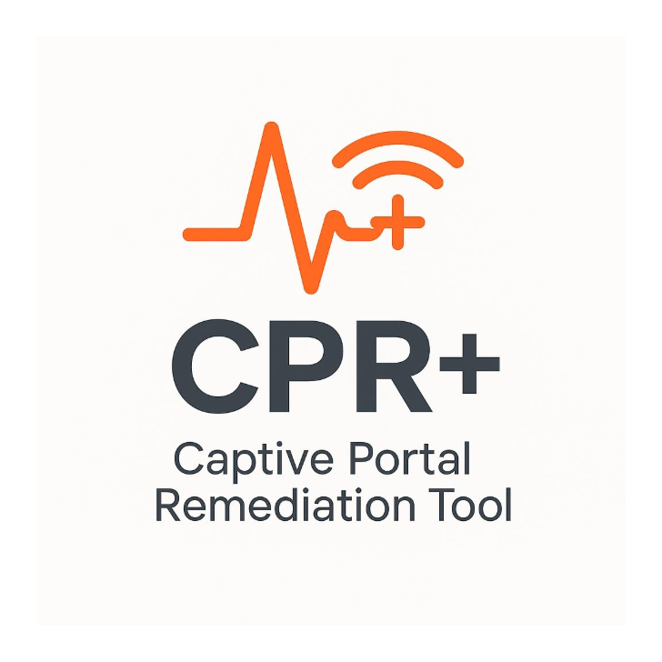

1) Hotel / Conference WiFi
Detects the login page and opens your browser automatically.

Your laptop's automatic WiFi authentication assistant
CPR+ (Captive Portal Remediation) is a background tool that runs automatically on your Optum-managed laptop. Its job is to detect when your WiFi connection requires authentication — like at a hotel, airport, conference centre, or guest network — and handle the process as automatically as possible.
You may never notice it working. That is intentional. The goal is for your laptop to “just connect.”
CPR+ wakes up automatically when your laptop connects to a new network (DHCP event). It checks the network silently and only takes action if it detects a problem. Common situations include:
Detects the login page and opens your browser automatically.
Detects whether your device needs a security posture check and triggers it.
Handles guest portal authentication workflows.
Protects connection speed by managing VPN behavior on-premises (see VPN Blackhole).
Detects transitions between networks and cleans up VPN state automatically.
This is normal. CPR+ opened a browser to help you complete the WiFi login. Complete the login on the page shown, then close the browser. Your VPN should reconnect automatically within about 30 seconds.
If CPR+ cannot complete authentication automatically, you will see a popup with two options:
This appears when your laptop detects a walled-garden network (like Wyndham, Marriott, or similar hotel WiFi) where the login page cannot be reached by normal means. The dialog shows the exact URL to navigate to. Your browser opens automatically — if it shows an error, copy the URL shown in the dialog and paste it into any browser.
Most of the time CPR+ works completely silently. If your network connects normally, you will see nothing.
CPR+ detected a captive portal and is trying to help you authenticate.
The VPN Blackhole feature is protecting your connection speed. It disables automatically when you leave the office. Learn more about VPN Blackhole.
Wait up to 60 seconds. VPN reconnects automatically after portal authentication. If it still fails, try toggling WiFi off and on.
This can happen on hotel networks that block browser navigation to IP addresses. Use the URL shown in the "Hotel WiFi Login Required" dialog and paste it into a different browser.
This should not happen on home networks. If it does, contact the IT Service Desk — your home router may be responding in an unexpected way.
Check Start Menu for "CPR+" or look for C:\ProgramData\CPR\\ on your laptop. If it is there, CPR+ is installed.
CPR+ is a managed service and cannot be disabled by end users. Contact your IT administrator if you have a specific conflict.
| Issue | Contact |
|---|---|
| CPR+ not working as expected | IT Service Desk — placeholder@optum.com [PLACEHOLDER] |
| VPN exemption needed at office | Network Access Team — placeholder@optum.com [PLACEHOLDER] |
| Feedback or bug report | Employee VPN SLO team — placeholder@optum.com [PLACEHOLDER] |